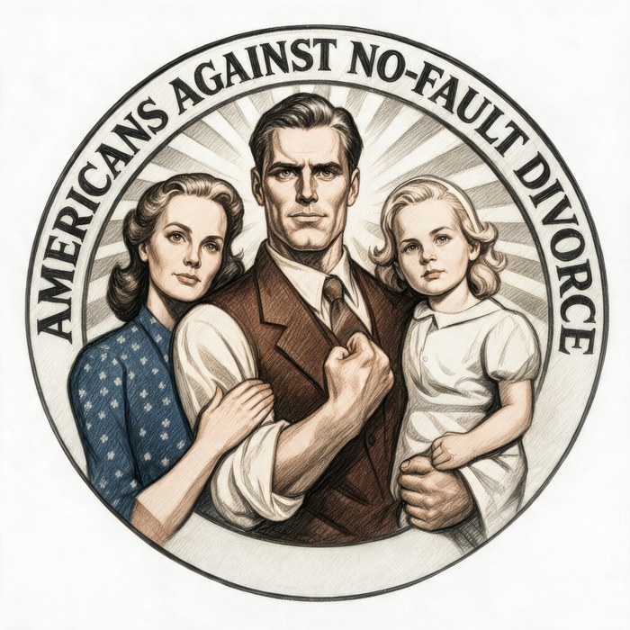

A marriage should not end by one person’s command.
We work to reform unilateral no-fault divorce: the rule that lets one spouse dissolve a marriage for any reason and for no reason at all, without cause and without the other’s consent. We pursue this through legislation, the courts, and public argument.

Feminism and the sexual revolution were the root. No-fault divorce was the weapon of choice.
The 1960s project of liberating the individual from the obligations of family required a legal mechanism to make the exit painless, uncontested, and permanent. Unilateral no-fault divorce was that mechanism. It was not demanded by the American public. It was promoted and lobbied for by the Family Law Section of state bar associations and by a national conference of lawyers whose own livelihoods depended on it.
Under this system, divorce becomes an administrative, guaranteed, and forced action rather than a judicial one. The state has not stepped out of the marriage business. It has picked a side.
From our aims and objectivesThe defect isn’t divorce. It’s the unilateral mechanism.
A marriage is entered as a binding civil contract and recognized as a public status. Unilateral no-fault lets that status be dissolved on one private person’s say-so, neither for a public reason nor by mutual agreement. It is neither genuine public policy nor ordinary contract law. It is a carte blanche grant of divorce without limitation.
Dissolution on demand
One spouse can end the marriage for any reason and for no reason at all, over the other’s objection. The objecting spouse has no defense. The statute does not regulate conduct; it endorses the viewpoint of the party who wants out.
Cause, or consent
Where both spouses agree, no-fault divorce remains available. Where one objects and no fault is alleged, the marriage is not dissolved on demand. Fault-based grounds and protections against abuse remain fully in place.
One goal, pursued in order of reach.
We are focused, not maximal. Each step is defensible on its own and sets up the next.
Restore mutual consent
Convert unilateral no-fault into mutual no-fault by adding and clarifying a mutual-consent requirement. It restores the one thing the current statute removed: the non-consenting spouse’s standing to be heard.
Align the incentives
A spouse who dissolves a marriage unilaterally, without cause, should not then be advantaged by it. Alimony and custody benefits should flow through fault-based or mutual grounds, not from a no-cause exit one party imposes on the other.
Build a pluralistic future
Our long-term aim is a personal-status model: a genuine menu of binding marriage codes couples opt into, on the pattern of jurisdictions where several codes coexist. A far more serious version of covenant marriage.
Not a question of rights. A question of structure.
This is the distinction at the heart of our constitutional litigation, including Jeff Morgan’s case in Dallas County. Most challenges to no-fault have been argued as individual-rights claims and have lost. The structural question is different, and has never been squarely answered.
The rights framing (individual)
Asks: does the defending spouse have a vested property interest in the continuation of the marriage that due process protects? Courts have answered no, repeatedly. Marital status, they say, is subject to legislative change.
This framing concedes the structural question at the start. It presumes the legislature had the power to pass the statute, and asks only whether some individual right survives inside it.
The structure framing (jurisdictional)
Asks: did the legislature have the power to enact a cause of action that dissolves a public legal status for any reason and for no reason at all? A statute without a legally cognizable standard of conduct is not law in the traditional sense. It is a political decision wearing judicial clothes.
Every state constitution we have surveyed prohibits legislative divorces: the legislature cannot grant a single divorce by special act. The jurisdictional question is whether unilateral no-fault lets the legislature do the same thing by general statute, draining the judicial function of substance.
Three fronts, reinforcing one another.
Legislative reform
Model legislation, relationships with state lawmakers, and party-platform work that moves our language from a plank to a priority to a bill.
Constitutional litigation
Support for well-framed court challenges to unilateral no-fault statutes, aimed at a declaration that the regime is unconstitutional and void. The cases →
Public argument
A podcast, written analysis, and recorded interviews. Raising the level of the debate beyond slogans. The library →
The law where you live.
Select a state to see its no-fault statute, its constitutional prohibition on legislative divorces, local particularities, legislative history, and key case law. The atlas is being built and verified; some entries carry [VERIFY] markers until confirmed against primary sources.
The significance of the state constitutional prohibitions on legislative divorces: they were written in the 1800s to move divorce out of the legislature and into the courts, precisely because a legislative divorce is a political decision rather than a judicial inquiry exercising discretion over grounds and causes of action. Unilateral no-fault returns the political character to divorce by draining the court’s discretion. If your state isn’t fully filled in, help us document it.
A question of law, not of any one marriage.
May a legislature create a cause of action that dissolves a fundamental legal status without regard to fault, and without default or mutual assent? Our lead case argues it may not.
- Case
- Morgan v. Morgan
- Cause No.
- DF-25-09534
- Court
- 301st District Court, Dallas County, Texas
- Statute
- Tex. Fam. Code § 6.001, “insupportability”
- Relief
- Declaration that § 6.001 is facially unconstitutional and void
- Filings
- Published by Mary’s Advocates
Marriage is formed as a binding contract. In Dartmouth College v. Woodward (1819), the Court reserved the very question now before the bench: a law that lets “one party annul a marriage without the consent of the other.” That is unilateral no-fault, described before it existed.
The challenge rests on independent, structural grounds:
The argument, in full.
Our research, recordings, model legislation, and the historical and anthropological context: built to be read, shared, and put in front of lawmakers.
Research & analysis
White papers, policy briefs, and the constitutional theory in short form.
Model Legislation →The Mutual Consent Divorce Act
Ready-to-adapt reform language and the proposed Texas Divorce Code.
Anthropology of Marriage →Five traditions
What marriage is for, according to Eastern Orthodoxy, Roman Catholicism, Islam, Judaism, and modern feminism.
History & Timeline →From Rome to Reagan
How jurisdiction over marriage moved from church to state, and from state to the individual will.
Podcast →Breaking the Spell of No-Fault Divorce
Episode by episode, the full case: status and contract, law and equity, public and private.
YouTube →Interviews & explainers
Recorded conversations and short-form video arguments.
A decade of work, now in motion.
Item 211
No-fault repeal incorporated into the platform, then sharpened to target “unilateral” no-fault and elevated to a legislative priority.
Policy adopted
Our policy item was incorporated into the state platform following Dycus v. Dycus.
Morgan, Aikins, Pankoe, Dycus
From a 2020 U.S. Supreme Court docketing to today’s active facial challenge in Dallas County. Read the cases.
Podcast & research
A growing body of episodes, analysis, and white papers raising the level of the debate. Browse the library.
We’re small, serious, and building.
We are a national network in the process of formalizing as a 501(c)(4) nonprofit, so we can advocate directly for reform. Turning a decade of work into law takes capacity, and that’s what we’re looking for.
Support the work
Fund the research, writing, and production that quality advocacy requires. Our growth is limited by capacity, not opportunity.
Open a door
Connections in press, politics, and among influential voices who can help carry the argument where it needs to go.
Document your state
Know your state’s divorce statute, constitution, or legislative history? Help us build the atlas and reach lawmakers where you live.